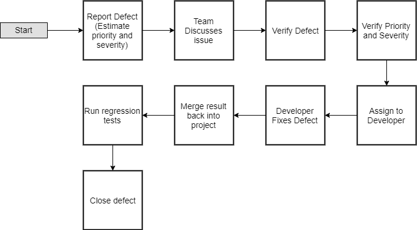

Issue Management¶
Issue Tracking Manager¶
ZenHub is an agile project management application within GitHub that allows organization of issues into task boards and reports.
Installation¶
Download the browser extension for Firefox or Chrome and accept permissions and sign in with GitHub. ZenHub will be added right into the GitHub interface.
Structure¶
The ZenHub Workspace is split up between 7 pipelines;
- New Issues
- Issues that have yet to be assigned or evaluated.
- Icebox
- Features that are wanted but that are not pertinent to the MVP.
- Backlog
- Issues that were not completed from the past Sprint. The highest priority.
- In Progress
- Issues that currently being worked on by the development team.
- Review/QA
- Issues that are ready to be code reviewed and QA tested.
- Done
- Issues that are done.
- Closed
- Closed issues.
Todo
Make sure that the pipelines have the correct description. Done and Closed need further editing.
Issue Types¶
- User Story
- Feature Request
- UX Issue
- Performance
- Bug
Todo
Description of each of the tags needed?
Issue Complexity¶
| Complexity | Difficulty |
|---|---|
| 1 | Trivial (Typo, small fix) |
| 2 | Busy Work (Easy Function) |
| 3 | Light (New Function) |
| 5 | Medium Rare (Set of interacting functions) |
| 8 | Medium Well (New feature) |
| 13 | Heavy (Major fix, multiple features) |
| 21 | Perplexing (Researching new techniques) |
| 40 | Beastly (Unsure if possible) |
Issue Life-Cycle¶
- Issue Creation
- Project Manager assigns initial priority, effort, queue position, etc. and assign to a group based on Certification subsection.
- Issue Assignment
- During Sprint Planning, issues to be worked on get decided and are assigned to specific members.
- Work on Issue
- Develop Unit Tests at this time.
- Issue goes through unit tests
- Issue goes through code review
- Code Review is scheduled no later than 4 days after the issue is moved into the QA/Review swimlane. Team members working on the same Certification subsection are required to participate and approve each issue.
- if passes, issue is merged into integration branch (developer marks the issue as done)
- if fails, repeat process at step 3
Todo
Make this section flow a little bit better, also, determine how to handle issues that go through entire testing suite.
- Issue goes through QA testing
QA tests are developed by members not working on the same Certification subsection. This is to ensure that functions behave as expected.
- if passes, continues to integration tests
- if fails, issue is reopened and is reverted back to the feature branches
Integration Tests
- if passes, stays in integration branch until Certification 2
- if fails, a new issue is created (go to step 1)
Todo
Add a diagram for the life-cycle of an issue?
Defect Reporting¶
Bug Life-cycle¶
{kind=link}
- Bug or defect is reported using ZenHub’s Issue Tracking System and the founder will estimate the priority and severity
- The bug will be verified by the team
- The priority and severity of the bug will be verified
- The bug will be assigned to a developer based on who’s code the bug was found in.
- The developer fixes the bug.
- The fix will be merged back to the integration branch of the project.
- Regression tests will be run to ensure it bug was fixed.
- Defect is closed.
Severity Levels¶
| Severity | Risks |
|---|---|
| 1 (Critical) |
|
| 2 (High) |
|
| 3 (Medium) |
|
Metrics¶
Tracking progress and success of the tests for each test cycle. Delivered to Project Manager and Development Team.
- Weekly Status Report: Provided to Project Manager and Development Team. Includes weekly pass/fail/complete percentages. Identify and troubleshoot any defects in the Showstopper or Critical category which have persisted for over a week. Report ongoing risks and mitigation plans.
- Sprint End Report: Compile trajectory graphs for defect lists broken out by status, severity, and age.
Start and End Criteria¶
- Start criteria detailed in the Test Planning Strategy section.
- Start criteria refer to the desirable and necessary conditions which need to be in place before test execution can be started.
- Start and end criteria are flexible since, especially during Sprint 2, it is understood that environments, accounts, data, and documentation may still be in an immature state. Start criteria will be evaluated by Product Manager for a go no-go determination at the start of a sprint.
- Start criteria expectation is that the activities listed in the Test Execution section of the schedule are all in place at the start of each sprint.
- End criteria
- Test Script execution Owner: Dev Team
- 95% pass rate on Test Scripts Owner: Dev Team
- Zero severity 1 or 2 level defects Owner: Dev Team
- 95% severity 3 level defects closed Owner: Dev Team
- Remaining defects converted to Change Requests or Deferred Owner: Dev Team
- 100% Coverage of requirements captured by expected and actual test script execution. Owner: Dev Team
- 100% Test strategy metrics collected Owner: Dev Team
- 100% of defects logged in GitLab’s Issue Tracker System Owner: Dev Team
- Final Test report reviewed, verified, and signed off on by Product Manager and Dev Team
- Test environment check pointed, tagged, and backed up Owner: Dev Team